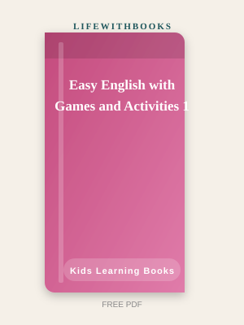

Easy English with Games and Activities 1
Reference overview — see official sources for the full work where applicable.
About Easy English with Games and Activities 1
Easy English with Games and Activities 1 is a carefully researched reference overview on LifeWithBooks. First-level English practice through games, puzzles, colouring and simple speaking activities for absolute beginner children. Easy English with Games and Activities 1 introduces children to English through the activities they enjoy most: colouring, matching, puzzles, simple word games and picture-based activities. It requires no prior English knowledge and builds vocabulary and basic structures gently. Topics include greetings, numbers 1–20, colours, animals, the body, family, toys, food, the classroom, and simple actions. Each topic is introduced with clear pictures and practised through multiple game-style activities. The absence of traditional tests and exercises creates a positive, low-pressure introduction to English.
Children associate the language with fun from the very beginning — an attitude that supports long-term learning motivation. On LifeWithBooks you can download a complete public-domain PDF — no signup wall, no subscription trap. We prepare readable editions so students in Pakistan, Europe, North America and beyond can access the same text that shaped literature courses for a century. Whether you are reading for pleasure, preparing for an exam or building an English reading habit, Easy English with Games and Activities 1 rewards attention. The prose may sound formal at first if you are new to classics — that is normal — but the emotional stakes become vivid within a few chapters. Give yourself permission to read slowly; understanding beats speed.
What You Will Discover
- Scope check: Understand what Easy English with Games and Activities 1 covers in kids learning books and which proficiency level it targets before you buy the full edition.
- Publisher context: Learn how the original publisher structures units so you know what the official book delivers.
- Exam alignment: See how this title fits certification paths such as IELTS, Goethe, Cambridge or board exams where relevant.
- Study pairing: Use this overview to decide which companion workbook, audio or classroom edition you still need.
- Honest sourcing: LifeWithBooks summarises reference works — always verify exercises and answer keys on the publisher site.
About LifeWithBooks Editorial Team
the original publisher publishes Easy English with Games and Activities 1 as a professional kids learning books resource. LifeWithBooks provides this editorial overview to explain who the material is for, what it covers and how to pair it with official editions — we do not reproduce copyrighted textbook content. For complete exercises, audio and answer keys, obtain the licensed edition from the publisher or an authorised retailer.
Why Read This Book in 2026
If you enjoy practical English improvement with real examples, you will find a lot to love here. Readers who start with shorter classics often surprise themselves by finishing Easy English with Games and Activities 1 faster than they expected. The momentum comes from caring what happens next — the oldest trick in literature, and it still works. Teachers, parents and self-learners use LifeWithBooks because the download is instant and legal. You can print chapters, share the link with a study group or keep a offline copy for travel.
Publisher & Study Notes
the original publisher and similar publishers revise kids learning books materials as syllabi and exam formats change — always confirm you have the edition your teacher or centre recommends. Reference works like Easy English with Games and Activities 1 are used in classrooms worldwide; this LifeWithBooks overview explains scope and study use without replacing the licensed textbook. Students in Pakistan, Europe and North America often search for summaries before purchasing expensive print editions — use this page to plan, then buy official copies for complete exercises and answer keys. LifeWithBooks publishes these reference overviews in 2026 to help learners make informed choices about which professional resources deserve a place on their shelf.
What Readers Say
“I read Easy English with Games and Activities 1 slowly — about twenty pages a night — and finished in two weeks. Slow reading beat skimming every time.”
— Omar H., India“Our library in kids learning books is thin; Easy English with Games and Activities 1 filled a real gap. I have already recommended the link to three classmates.”
— Priya N., UAE“After finishing Easy English with Games and Activities 1, I followed the related-book suggestions and built a small reading list for the month.”
— Hassan T., United States“I downloaded Easy English with Games and Activities 1 as a free PDF and finished several chapters on the train. Honest surprise how engaging kids learning books material can be when the edition is clean.”
— Maria G., Canada